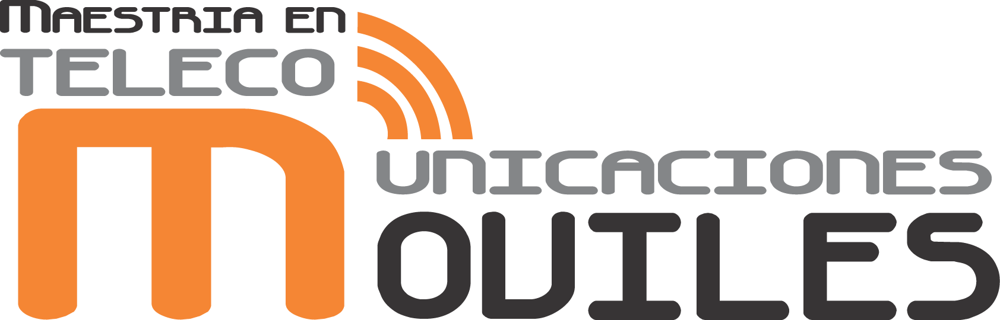

<div class="col-lg-12 col-md-12 col-sm-12 col-xs-12 ">
  <nb-card>
    <nb-card-header>
      
    </nb-card-header>
    <nb-card-body>
      <div class="row">
        <div class="col-lg-3 col-md-3 col-sm-12 col-xs-12 ">
            <button (click)="activar1()" class="btn btn-outlined btn-warning btn-block">Perfil del programa</button>
            <button (click)="activar2()" class="btn btn-outlined btn-warning btn-block">Perfil del aspirante</button>
            <button (click)="activar3()" class="btn btn-outlined btn-warning btn-block">Perfil del egresado</button>
            <button (click)="activar5()" class="btn btn-outlined btn-warning btn-block">Estructura curricular</button>
            <button (click)="activar6()" class="btn btn-outlined btn-warning btn-block">Metodología</button>
            <button (click)="activar7()" class="btn btn-outlined btn-warning btn-block">Líneas de investigación</button>
            <button (click)="activar8()" class="btn btn-outlined btn-warning btn-block">Inscripción</button>
            <button (click)="activar9()" class="btn btn-outlined btn-warning btn-block">Más información</button>
            <br>
        </div>
        <div class="col-lg-9 col-md-9 col-sm-12 col-xs-12 ">
          <div [hidden]="opcion !== 'programa'">
            <br>           
            <p>La Maestría en las Telecomunicaciones Móviles nace como resultado de la experiencia adquirida, por más de doce años, por parte de la Universidad Distrital, en el desarrollo de la Especialización en Telecomunicaciones Móviles. Así mismo, es el primer programa académico con metodología virtual de la Facultad de Ingeniería. El programa está orientado al desarrollo de la investigación en el área de las Telecomunicaciones Móviles.</p>
            <p>La Maestría en Telecomunicaciones Móviles en metodología virtual tiene como propósito formar investigadores que puedan apropiar, transformar y transferir el conocimiento para generar, innovar y crear tecnología electrónica propia, en la búsqueda por el desarrollo social sostenible en el ámbito urbano, nacional e internacional.</p>
          </div>            

          <div [hidden]="opcion !== 'aspirante'">
            <h3>Perfil del aspirante</h3>
            <br>
            <ol>
              <li><p>Ingeniero electrónico o profesiones afines.</p></li>
              <li><p>Interés y vocación por la investigación.</p></li>
              <li><p>Conocimiento y experiencia en lineas de investigación del área de Telecomunicaciones Móviles.</p></li>
              <li><p>Preferiblemente con experiencia en Telecomunicaciones Móviles.</p></li>
              <li><p>Disponibilidad en formación virtual.</p></li> 
              <li><p>Autonomía y gestión en el uso del tiempo.</p></li>
              <li><p>Habilidades y competencias comunicativas.</p></li>
            </ol>
          </div>

          <div [hidden]="opcion !== 'egresado'">
            <h3>Perfil del egresado</h3>
            <br>
            <p>El <strong>Magíster en Telecomunicaciones Móviles</strong> estará en capacidad de planear, analizar, diseñar, implementar, adaptar y gestionar proyectos avanzados del área de Telecomunicaciones Móviles, y tendrá la posibilidad de aplicar sus conocimientos en diversos campos. El trabajo en esta área estará basado en un enfoque metodológico de investigación, apoyado en herramientas matemáticas, analíticas y de simulación, en áreas temáticas diversas: las arquitecturas del software.</p>
            <p>El Magíster en Telecomunicaciones Móviles también estará en capacidad de ofrecer sus conocimientos y habilidades a entidades del sector público y privado en el campo de las telecomunicaciones como investigadores, asesores, consultores, administradores y directores de proyectos. Así mismo, sus conocimientos son igualmente requeridos como soporte de los operadores de telecomunicaciones y en el desarrollo de auditorías.</p>
          </div>

          <div [hidden]="opcion !== 'estructura'">
            <h3>Estructura curricular</h3>
            <br>
            <p>El programa de la Maestría en Telecomunicaciones Móviles en metodología virtual tiene <strong>58 créditos académicos</strong>. Esos 58 créditos deben ser cursados en un tiempo máximo de dos años con la distribución de créditos académicos, y será distribuidos en los siguientes núcleos de formación:</p>
            <ol>
              <li><p><strong>Núcleo de formación fundamental:</strong> el núcleo consta de cursos académicos básicos que suministran las bases conceptuales necesarias para abordar la labor investigativa en cuanto a su metodología.</p></li>
              <li><p><strong>Núcleo de énfasis:</strong> en este núcleo, se busca que el estudiante profundice en temáticas relacionadas con las telecomunicaciones móviles. Entre los cursos que se imparten en este núcleo están: Curso Avanzado de Antenas, Regulación y Aspectos Legales, Ingeniería de Software para Aplicaciones Móviles, Arquitectura y Planeación de Redes Móviles, Sistema de Comunicaciones Ópticas e Inteligencia Computacional.</p></li>
              <li><p><strong>Núcleo electivo:</strong> en este núcleo se incluyen electivas intrínsecas que pueden ser cursadas por el estudiante con el objetivo de abordar dos áreas del conocimiento: Gestión (Electiva I) y Disciplinar (Electiva II).</p></li>
              <li><p><strong>Investigación:</strong> en este núcleo, el estudiante podrá cursar dos asignaturas indispensables: Metodología del Aprendizaje, e Investigación y Defensa de Tesis. En el primero, será orientado sobre el desarrollo de la metodología virtual, y en el segundo, su propuesta de trabajo final de maestría será fortalecida.</p></li>
            </ol>
          </div>

          <div [hidden]="opcion !== 'metodologia'">
            <h3>Metodología</h3>
            <br>
            <p>La <strong>metodología virtual</strong> de la Maestría en Telecomunicaciones Móviles demanda gestión del tiempo y de los recursos por parte del estudiante. Esto, con el fin de dar cumplimiento a las actividades programadas para cada módulo. El desarrollo de la Maestría es en línea y requiere del acceso a diferentes recursos virtuales, tales como:</p>
            <ol>
              <li><p>Bases de datos.</p></li>
              <li><p>Mesa de ayuda de soporte técnico.</p></li>
              <li><p>Evaluación en línea.</p></li>
              <li><p>Acceso en línea a contenidos temáticos.</p></li><li><p>Clases presenciales virtuales.</p></li>
              <li><p>Clases magistrales virtuales.</p></li>
              <li><p>Aprendizaje basado en proyectos, problemas, estudios de caso.</p></li>
              <li><p>Trabajo autónomo y colaborativo.</p></li>
            </ol>
          </div>

          <div [hidden]="opcion !== 'investigacion'">
            <h3>Grupos y líneas de investigación</h3>
            <br>
            <p>En cuanto a los <strong>grupos y líneas de investigación</strong>, cada línea está asociada con los ojos temáticos de uno o varios grupos de investigación. A continuación, se listan las líneas y grupos de investigación asociados con la Maestría. Sin embargo, no se excluyen los demás grupos de investigación institucionales que se han vinculado o que aportan a la maestría:</p>
            <ul>
              <li><p>Investigación, Desarrollo y Aplicaciones en Señales (<strong>IDEAS</strong>): el grupo basa su línea de investigación en el procesamiento digital de señales, en áreas que incluyen el control, las telecomunicaciones, las redes de datos, el tratamiento de voz y el tratamiento de imágenes, entre otras (<span><a href="https://comunidad.udistrital.edu.co/grupoideas/" target="_blank">Sitio web</a></span>).</p></li>
              <li><p>Laboratorio de Investigación y Desarrollo en Electrónica y Redes (<strong>LIDER</strong>): el grupo centra su investigación en las redes de nueva generación, las redes de telefonía celular, y las redes inalámbricas (<span><a href="https://comunidad.udistrital.edu.co/grupolider/" target="_blank">Sitio web</a></span>).</li>  
              <li><p>Grupo de Comercio Electrónico en Colombia (<strong>GICOECOL</strong>): el grupo centra su investigación en el comercio y los negocios electrónicos; busca ser un movilizador para los estudiantes y docentes universitarios en la adaptación, investigación y desarrollo de tecnologías transaccionales (<span><a href="https://comunidad.udistrital.edu.co/gicoecol/" target="_blank">Sitio web</a></span>).</p></li>
              <li><p>Laboratorio de Automática, Microelectrónica e Inteligencia Computacional (<strong>LAMIC</strong>): el grupo investiga en torno a la microelectrónica; estudia, promueve y desarrolla métodos, algoritmos y procedimientos aplicables a la medición, control y supervisión automática de procesos continuos, de manufactura o híbridos (<span><a href="https://comunidad.udistrital.edu.co/lamic/" target="_blank">Sitio web</a></span>).</p></li>
              <li><p>Grupo de Investigación en Telecomunicaciones, UD (<strong>GITUD</strong>): este grupo centra su investigación en Sistemas de Telecomunicaciones; desarrolla su quehacer científico alrededor de la generación de hardware y software como solución a problemas puntuales en el sector de las telecomunicaciones, particularmente en la capa física (<span><a href="https://comunidad.udistrital.edu.co/gitud/" target="_blank">Sitio web</a></span>).</p></li>
              <li><p>Laboratorio de Ingeniería de Microondas, Electromagnetismo y Radiación (<strong>LIMER - GRECO</strong>): este grupo de investigación se centra en el diseño de elementos y agrupaciones radiantes, dispositivos pasivos y circuitos de microondas, así como métodos numéricos de electromagnetismo, comunicaciones, sistemas y redes ópticas soportadas por el grupo (<span><a href="https://comunidad.udistrital.edu.co/limer/" target="_blank">Sitio web</a></span>).</p></li>
              <li><p>Arquitecturas de Software (<strong>ARQUISOFT</strong>): este grupo de investigación se ha consolidado como un campo emergente de investigación en la Ingeniera de Software e intenta lograr diseños arquitecturales confiables (<span><a href="http://arquisoft.udistrital.edu.co/grupo" target="_blank">Sitio web</a></span>).</p></li>
              <li><p>Grupo de Investigación en Interoperabilidad de Redes Académicas (<strong>GIIRA</strong>): el grupo trabaja las ramas de investigación más sobresalientes en la Informática y computación actual (<span><a href="http://giira.udistrital.edu.co/" target="_blank">Sitio web</a></span>).</p></li>
              <li><p>Grupo Internet Inteligente (<strong>Internet Inteligente</strong>): el grupo centra su investigación en crear, promover y desarrollar soluciones en el campo de la informática y las telecomunicaciones específicamente en el área de las redes TCP/IP, que permitan la integración de servicios avanzados de Internet Inteligente (<span><a href="http://doctoradoingenieria.udistrital.edu.co/index.php/es/investigacion/grupos-de-investigacion/item/297-internet-inteligente" target="_blank">Sitio web</a></span>).</p></li>
            </ul>
          </div>

          <div [hidden]="opcion !== 'inscripcion'">
            <h3>Inscripción</h3>
            <br>
            <p>1. Diligenciar el formulario en línea y adjuntar la documentación solicitada (<span><a href="https://autenticacion.portaloas.udistrital.edu.co/accountrecoveryendpoint/register.do" target="_blank">Registrarse aquí</a></span>)</p>
            <p class="p1">Para completar el formulario, tenga a mano los siguientes documentos escaneados:</p>
            <ul class="u1">
              <li><p>Foto fondo azul 3x4.</p></li>
              <li><p>Cédula de Ciudadanía o Pasaporte.</p></li>
              <li><p>Libreta Militar (aplica para nacionales colombianos, hombres).</p></li>
              <li><p>Hoja de vida o CvLAC.</p></li>
              <li><p>Certificación de notas de pregrado expedida por la universidad con históricos de calificaciones de las asignaturas y promedio general.</p></li>
              <li><p>Acta de pregrado.</p></li>
              <li><p>Diploma de pregrado.</p></li>
              <li><p>Acta de posgrado (si se tiene).</p></li>
              <li><p>Diploma de posgrado (si se tiene).</p></li>
              <li><p>Formulario de inscripción debidamente diligenciado y firmado, se pueden encontrar al final de la página.</p></li>
              <li><p>Propuesta de investigación. El formato de la propuesta se pueden encontrar al final de la página.</p></li>
            </ul>
            <p class="p1"><strong>Nota:</strong> todos los documentos deben presentarse en formato '.pdf'. Se debe cargar la información de los documentos en la opción "Documentos solicitados" que está incluida en el formulario.</p>
            <p>2. Pago inscripción</p>
            <p class="p1">Formas de pago de la inscripción (únicamente online): una vez el aspirante concluya el diligenciamiento del formulario y cargue los documentos en los soportes mencionados, se habilitará la opción de pago en línea a través de PSE (tarjeta débito).</p>
            <p class="p1"><strong>Nota:</strong> en caso de tener alguna dificultad, comunicarse al correo <span><a href="mailto:mtmoviles@correo.udistrital.edu.co">mtmoviles@correo.udistrital.edu.co</a></span> ó al <span><a href="https://planestic.udistrital.edu.co/mesadeayuda/" target="_blank">soporte técnico</a></span>.</p>
            <p class="p1"><strong>Para tener en cuenta:</strong></p>
            <ul class="u1">
              <li><p>El valor de la inscripción es de $110.400 de acuerdo con los derechos pecuniarios de la Universidad Distrital para el año 2019. (<span><a href="https://sgral.udistrital.edu.co/xdata/sgral/cir_2019-001.pdf" target="_blank">Ver derechos pecuniarios 2019</a></span>)</p></li>
              <li><p>Usted puede diligenciar el formulario por partes, según la secuencia que se va indicando. Cuando ingrese nuevamente a la plataforma, complete los datos de la primera pestaña, y se cargará la información grabada anteriormente para que pueda continuar con el proceso.</p></li>
            </ul>
            <p>3. Hoja de vida</p>
            <p class="p1">Se asignará un puntaje de 0 a 100, teniendo en cuenta el nivel de estudios, la experiencia en el área y al productividad académica. El puntaje de la hoja de vida representa el 50% de la evaluación total.</p>
            <p>4. Videoentrevista</p>
            <p class="p1">Se asignará un puntaje de 0 a 100, teniendo en cuenta el nivel de estudios, la experiencia en el área y la productividad académica. El puntaje de la videoentrevista representa el 40% de la evaluación.</p>
            <p>5. Prueba de segundo idioma</p>
            <p>6. Prueba de investigación</p>
            <p><span>&gt;&gt; <a href="https://drive.google.com/file/d/1YWM7pz3ekkV0lQGrVtL3NkMWx19SPl3c/view" target="_blank">Formato de inscripción</a></span></p>
            <p><span>&gt;&gt; <a href="https://drive.google.com/file/d/0BzCY5_UHSoSScTAwRjlvRHY0ZjA/view" target="_blank">Formato de propuesta de investigación</a></span></p>
          </div>

          <div [hidden]="opcion !== 'informacion'">
            <h3>Más información</h3>
            <br>
            <dl>
              <dt>Coordinador(a):</dt>
              <dd>Leonardo Plazas Nossa</dd>
              <dt>Dirección:</dt>
              <dd>Carrera 8 # 40 - 62 Sexto piso</dd>
              <dt>Horario de atención:</dt>
              <dd>Lunes a viernes de 8:00 a.m. a 5:00 p.m.</dd>
              <dt>PBX:</dt>
              <dd>3239300</dd>
              <dt>Ext:</dt>
              <dd>1424 y 1524</dd>
              <dt>Correo electrónico:</dt>
              <dd><span><a href="mailto:mtmoviles@correo.udistrital.edu.co">mtmoviles@correo.udistrital.edu.co</a></span></dd>
              <dt>Redes sociales</dt>
              <dd class="redes">
                <a class="ion ion-social-facebook" href="https://www.facebook.com/matelecomovilesvirtud/" target="_blank"></a>
                <a class="ion ion-social-twitter" href="https://twitter.com/MaTelecomoviles?lang=es" target="_blank"></a>
                <a class="ion ion-social-linkedin" href="https://www.linkedin.com/in/maestria-tmoviles-metodología-virtual-a71151112?authType=NAME_SEARCH&amp;authToken=dOSW&amp;locale=es_ES&amp;srchid=1358990871454204833626&amp;srchindex=1&amp;srchtotal=1&amp;trk=vsrp_people_res_name&amp;trkInfo=VSRPsearchId:1358990871454204833626,VSRPtargetId:472141237,VSRPcmpt:primary,VSRPnm:true,authType:NAME_SEARCH" target="_parent"></a>
              </dd>
              <dt>
                <span><b><a href="https://mtmoviles.udistrital.edu.co/" target="_blank">Sitio web</a></b></span>
              </dt>
              <dt>
                <span><b><a href="https://planestic.udistrital.edu.co/mesadeayuda/" target="_blank">Mesa de ayuda</a></b></span>
              </dt>
            </dl>
          </div>
        </div>
      </div>
    </nb-card-body>
  </nb-card>
</div>